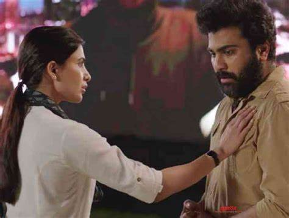
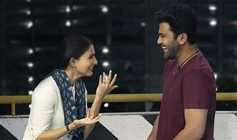

Jaanu is a 2020 Indian Telugu-language romantic drama film written and directed by C. Prem Kumar, Hrishikesh Bhargava, which is a remake of his own Tamil film '96 (2018). It is produced by Dil Raju's Sri Venkateswara Creations, and stars Sharwanand and Samantha Ruth Prabhu. The film revolves around the reunion of former students from a 2004 batch class fifteen years after their graduation. The reunion also serves as an opportunity for two former lovers, Ram and Janu, to resolve issues surrounding their breakup. It was released on 7 February 2020.
SK. Ramachandra aka Ram (Sharwanand) is a travel photographer. He visits his high school and is overwhelmed by memories. So, a reunion is arranged through their school WhatsApp group. At the reunion, his friends Murali (Vennela Kishore), Subhashini (Saranya Pradeep) and Sathish (Thagubothu Ramesh) catch up with him. Murali hesitantly mentions that Janaki aka Jaanu is coming from Singapore. Ram and Jaanu have been friends and classmates in tenth grade. Jaanu is a talented singer. Ram develops a love for Jaanu and she reciprocates. Once their board exams are over, they have a moment with each other where Jaanu asks him not to forget her until they meet again after the holidays.
Jaanu (Samantha Akkineni) arrives at the reunion and searches for Ram. When Subha points Ram's location to her, Jaanu walks towards him. She reminisces the first day of 11th grade when she eagerly awaits Ram's arrival to the classroom, but he doesn't show up. She finds that Ram has left the school because his father had financial difficulties and his family relocated to Hyderabad overnight. Jaanu is inconsolable and pines for Ram until she completes school.
Ram and Jaanu finally meet, but their first interactions are awkward, but later improve. Their friends talk about Jaanu's married life in Singapore and disclose that Ram is still single and has not moved on. After the reunion party, both go out on a drive. Jaanu reveals how she could not forget Ram and would have traded anything just to have met him once back then. She narrates how circumstances forced her to marry someone else. Then, Ram asks Jaanu if she really does not remember the day he came to her college to meet her. Ram says that he and Satish waited in front of Jaanu's college to meet her and passed on a message through a student.
Surprisingly, Jaanu refused to meet Ram and forbade him to contact her again. He returned sadly and never tried to meet her since then. Jaanu is devastated listening to this and reveals that she never saw them at her college and thought it was her stalker who was troubling her. Ram tells that except for the mistake of assuming that she hated him, he knew everything about her life. He also tells about seeing her from afar at her wedding. Jaanu is heartbroken because she felt his presence and expected him to come for her until the last minute. Both feel sad about their misfortune and finally come to terms with everything that happened in their lives. Jaanu expresses her desire to spend the final few hours with Ram before she catches the flight back home.
They go out into the city and then to a restaurant and catch up on more memories. There, they meet Ram's photography students who assume Jaanu is his wife and request her to share their story. Jaanu obliges and narrates an improvised version of the time when Ram tried to meet Jaanu at her college. She tells about how they finally met and made up and have been together ever since and got married. Ram feels awkward but tries his best to play along. The students leave, but the rain soaks Ram and Jaanu. So he asks her to visit his apartment to freshen up.
At his apartment, Jaanu is visibly upset that Ram does not have a love life and requests him to move on, marry, and have a family. She finally sings Ram's favorite song : Yamuna Thatilo (from Dalapathi) for him, a song that she had purposefully avoided singing in school in spite of his repeated requests. Ram shows Jaanu a collection of their old memories like love poems, dried flowers and their school uniforms. They have little time and return to Jaanu's hotel to prepare for her flight in a few hours. Jaanu is sad knowing that she will leave Hyderabad and Ram very soon. At the airport, Ram escorts her till the boarding gate and they bid a teary farewell. Jaanu then gets into the flight and departs. Back at his home, Ram finds Jaanu's clothes that he had put to dry the previous night. He folds them neatly, puts them along with his treasured collection of school memories, and shuts the suitcase and the screen cuts to black.